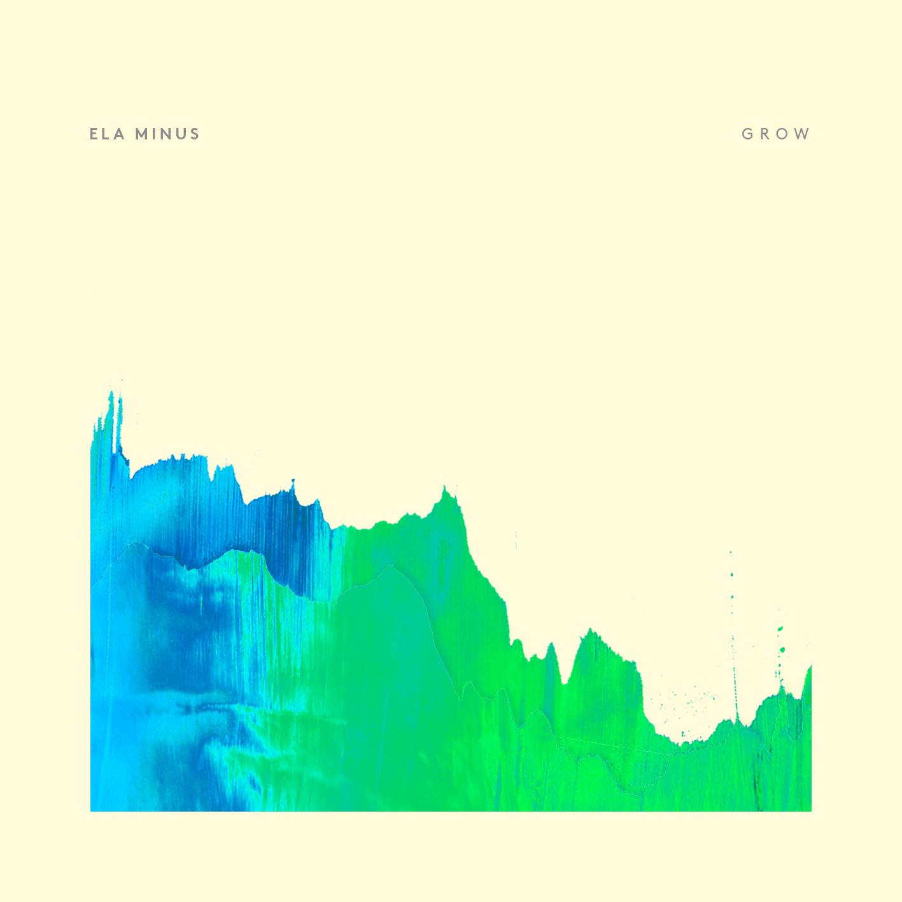

Ela Minus - DA



Información del álbum facilitada por discogs.com:
Fecha de lanzamiento: 2017
Géneros: Electronic, Latin, Pop, Folk, World, & Country
Estilos: Experimental
Pais: Italy
Votos: Media de 5.0 con 3 votos
Sello: Oxford
Tracklist:
A1. Facón (feat. Jhon Montoya)
A2. Huanaco
A3. Otoño Primavera (feat. Lulacruza)
A4. Na Rúa (feat. Carrot Green)
A5. Carnaval De Las Flores
B1. Belleza En El Aire (feat. Weste)
B2. Circumvalar
B3. Túneles (feat. Ela Minus)
B4. Pura Danza
B5. Saudade